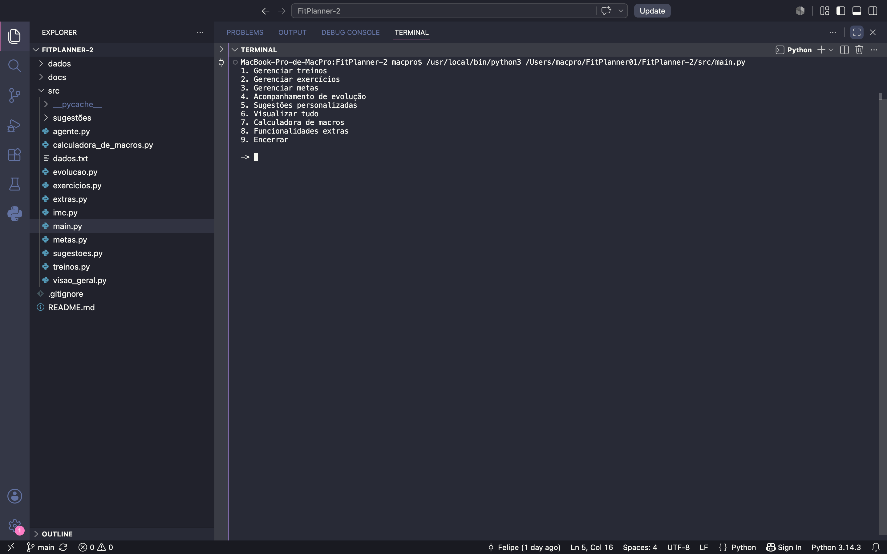
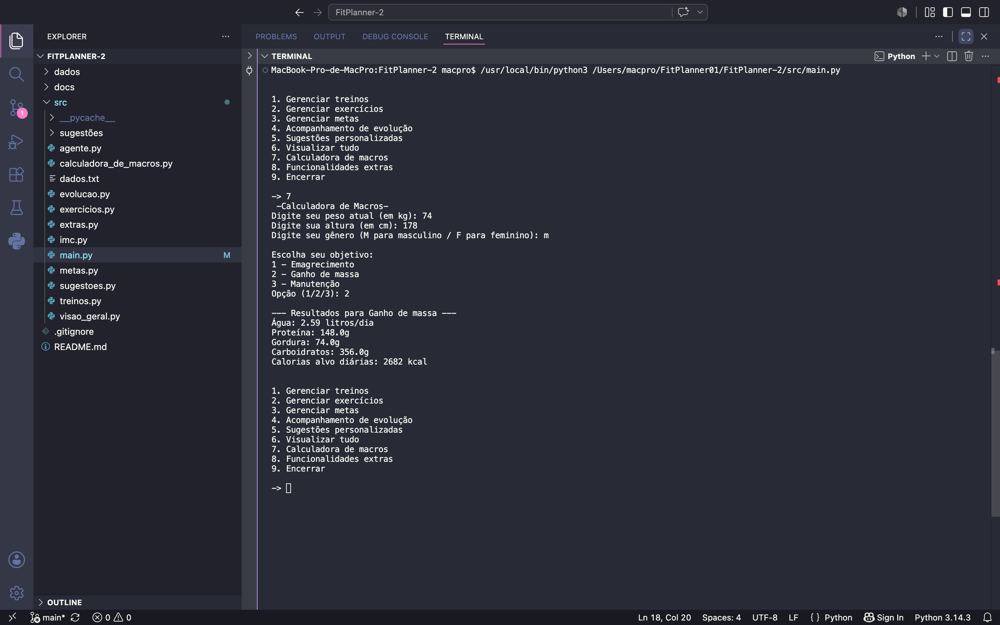

O FitPlanner é uma aplicação em Python executada no terminal, criada para facilitar a organização e o acompanhamento da rotina fitness dos usuários. A plataforma permite registrar e gerenciar treinos, exercícios, objetivos pessoais e dados de evolução física de maneira simples e intuitiva. Além disso, o sistema oferece recomendações personalizadas com base nas informações armazenadas, auxiliando na definição de estratégias mais adequadas para alcançar metas de saúde e condicionamento físico. O principal objetivo do FitPlanner é reunir em um único ambiente todas as informações relevantes da jornada fitness, proporcionando maior controle sobre o progresso e contribuindo para uma rotina de treinos mais organizada e eficiente. Criado na cadeira de Fundamentos de programação da professora Carol Melo.
O projeto foi desenvolvido inteiramente em Python para execução no terminal. Ele foi construído por uma equipe de seis pessoas, sendo que cada integrante ficou responsável por um arquivo específico do sistema. Durante o desenvolvimento, trabalhamos bastante com manipulação de arquivos .txt e .csv, utilizados para armazenar todos os dados da aplicação. Fiquei responsável pelo arquivo extras.py, no qual utilizei a biblioteca matplotlib.pyplot para gerar gráficos. Além disso, realizei diversos commits relacionados ao tratamento de erros, criação de funções e integração de funcionalidades com o arquivo principal (main.py).

